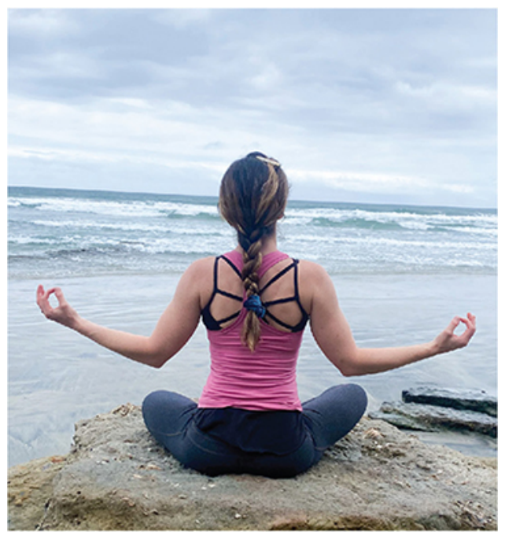
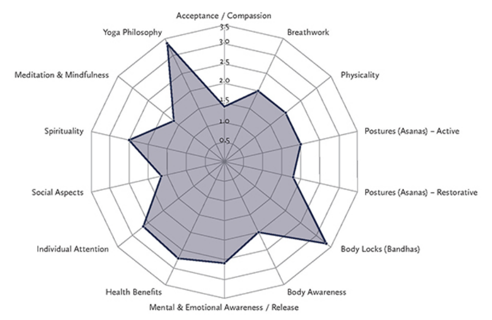
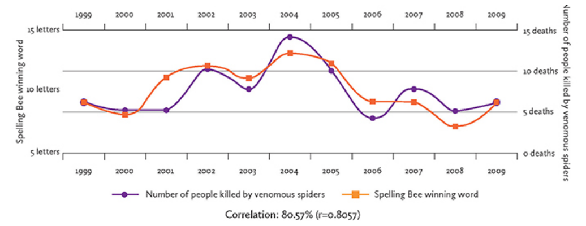

Chương 1 — Giới thiệu nghiên cứu về Yoga và Thiền định
CHƯƠNG 1
Nhập môn Nghiên cứu về Yoga và Thiền định
Việc thực hành yoga và thiền định ngày càng trở thành tâm điểm của các nghiên cứu khoa học. Các nghiên cứu hướng tới việc xác thực những lợi ích sức khỏe của chúng. Liệu yoga và thiền định có thực sự giảm căng thẳng hiệu quả? Có mang lại phương pháp tiếp cận thay thế giúp cải thiện một số tình trạng và bệnh lý nhất định không? Có hỗ trợ điều trị rối loạn giấc ngủ và rối loạn khí sắc không? Việc sàng lọc và hiểu rõ cơ sở khoa học đằng sau các nghiên cứu về yoga và thiền định có thể là một thách thức. Nhiều nghiên cứu từng bị đặt dấu hỏi do chất lượng thấp. Chúng thường dựa trên cỡ mẫu nhỏ và phụ thuộc vào bảng câu hỏi tự báo cáo thay vì dữ liệu sinh học. Trong chương này, chúng ta sẽ điểm qua những yếu tố quan trọng cần cân nhắc khi đánh giá các nghiên cứu then chốt và thảo luận về những điểm cần chú ý khi xem xét kết quả.

Hình 1.1 Thiền định bên bờ biển giúp thư giãn.
GIỚI THIỆU
Trong nhiều thế kỷ, những người thực hành yoga và thiền định đã ghi nhận cảm giác bình an, sảng khoái và định tâm (Hình 1.1). Các nhà khảo cổ học và sử học đã xác định niên đại của hoạt động thực hành thiền định sơ khai vào khoảng năm 1500 TCN (Freeman và cộng sự, 2019). Tuy nhiên, không ai biết chính xác nguồn gốc của các phương pháp thiền định. Chỉ gần đây, các nhà khoa học mới bắt đầu hiểu được cách thức mà những phương pháp thực hành chiêm nghiệm này tác động lên não bộ.
Não bộ con người có tính khả biến (malleable). Các nghiên cứu mới cho thấy việc thường xuyên thực hành yoga và thiền định có thể làm thay đổi não bộ theo vô số cách. Chẳng hạn, những vùng não liên quan đến sự đồng cảm có thể được kích hoạt và củng cố thông qua thực hành thiền từ bi (Lutz và cộng sự, 2008). Những bài tập này có thể thay đổi các đường dẫn truyền thần kinh, giúp người thực hành trở nên tử tế, giàu lòng trắc ẩn hơn cũng như sống lâu và khỏe mạnh hơn.
Chúng ta không cần đến kỹ thuật chẩn đoán hình ảnh não bộ mới hiểu rằng yoga và thiền định mang lại tác động tích cực cho sức khỏe. Các phương pháp thực hành này được ghi nhận rộng rãi là đem lại lợi ích cả về thể chất lẫn tinh thần, dẫn đến sự gia tăng nhanh chóng số lượng người tập tại thế giới phương Tây. Thực tế, hiện có hơn 32 triệu người đang tập yoga tại Hoa Kỳ, dù con số này chưa đại diện cho toàn bộ dân số nói chung (Zhang và cộng sự, 2021). Khảo sát Phỏng vấn Sức khỏe Quốc gia năm 2017—một trong những cuộc khảo sát sức khỏe lớn nhất và toàn diện nhất tại Hoa Kỳ—cho thấy phụ nữ có khả năng tập yoga cao gấp đôi nam giới, và yoga phổ biến nhất ở người trưởng thành da trắng không phải gốc Tây Ban Nha trong độ tuổi 18–44 (Clarke và cộng sự, 2018; CDC, 2018; NCCIH, 2020). Sự quan tâm ngày càng lớn đối với các phương pháp thực hành chiêm nghiệm cũng thúc đẩy sự tò mò trong giới nghiên cứu nhằm tìm hiểu cách chúng tác động đến tâm trí và cơ thể. Trong mười năm qua, lĩnh vực nghiên cứu yoga và thiền định đã bùng nổ. Số lượng công bố khoa học tăng theo cấp số nhân, từ hầu như không có gì vào năm 1950 lên đến hàng nghìn bản thảo liên quan đến các phương pháp này hiện nay. Tính chặt chẽ của các nghiên cứu khoa học cũng đang được cải thiện, giúp nâng cao tính chính danh cho lĩnh vực. Các nhà nghiên cứu từ những trường đại học và bệnh viện lớn hiện đang khám phá cách yoga và thiền định tác động đến sức khỏe, bao gồm cả những thay đổi trong não bộ.
ĐỊNH NGHĨA YOGA
Yoga bắt nguồn từ Ấn Độ như một phương pháp thực hành tâm linh. Một trong những văn bản yoga đầu tiên là Yoga Sutras (Kinh Yoga) của Patanjali, có niên đại từ những thế kỷ đầu Công nguyên (Schmalzl, Powers và Henje Blom, 2015). Từ “yoga” được dịch từ tiếng Phạn “yug” hoặc “yuj”, có nghĩa là “sự hợp nhất” hay “phương pháp hợp nhất tâm linh” (Van Aalst và cộng sự, 2020). Mục tiêu của thực hành truyền thống là đạt được trạng thái cân bằng giữa tâm trí và cơ thể, cũng như giữa cá nhân với lợi ích chung cao đẹp hơn.
Ngày nay, yoga thường được xem là một phương pháp thực hành vận động chánh niệm. Sự gia tăng số lượng người tập và mối quan tâm đã dẫn đến sự ra đời của vô số trường phái yoga ở phương Tây, bao gồm Vinyasa, Hatha, Iyengar, yoga phục hồi (restorative) và nhiều loại hình khác. Một số trường phái, như Power Yoga, nhấn mạnh vào các tư thế thể chất, trong khi số khác tập trung nhiều hơn vào thiền định và kỹ thuật hít thở. Yoga ở phương Tây thường được nhìn nhận như một bài tập thể chất, trong khi yoga phương Đông có xu hướng chú trọng hơi thở và các phương pháp thiền định (Schmalzl, Powers và Henje Blom, 2015).
Phạm vi rộng lớn của các hình thức thực hành được gọi chung là yoga có thể khiến việc xác định chính xác đối tượng đang được khảo sát trong một nghiên cứu trở nên khó khăn. Loại hình yoga hoặc thiền định được sử dụng trong các nghiên cứu thường không rõ ràng hoặc không được nêu cụ thể, làm lu mờ các kết luận về từng trường phái yoga khác nhau. Thay vào đó, các kết luận thường dựa trên thuật ngữ bao trùm “yoga” hoặc “thiền định”, và các nghiên cứu tìm cách hiểu xem những thực hành chung này giúp giảm căng thẳng, cải thiện sức khỏe và tăng khả năng tự điều chỉnh như thế nào.
Gần đây, các nhà khoa học nhận ra sự cần thiết của một định nghĩa rõ ràng hơn về yoga để sử dụng trong nghiên cứu, và Viện Y tế Quốc gia Hoa Kỳ (NIH) đã tài trợ xây dựng một bảng câu hỏi phục vụ cho các nghiên cứu về sau. Bảng câu hỏi Các Đặc tính Thiết yếu của Yoga (Essential Properties of Yoga Questionnaire), do các nhà khoa học tại Đại học California, San Diego phát triển, bao gồm 62 câu hỏi về 14 khía cạnh của một lớp học yoga, gồm các thành phần như lòng trắc ẩn, luyện thở, nhận thức cơ thể, triết lý yoga và nhiều yếu tố khác (Park và cộng sự, 2018). Giờ đây, các nhà khoa học có thể sử dụng bảng câu hỏi này để định lượng chính xác hơn loại hình can thiệp yoga mà họ áp dụng trong nghiên cứu của mình (Hình 1.2).

Hình 1.2 Bảng câu hỏi Các Đặc tính Thiết yếu của Yoga: sơ đồ minh họa 14 khía cạnh.
Nguồn: Hình ảnh do Erik Groessl từ Đại học California, San Diego cung cấp. Trích từ:
https://epyqview.ucsd.edu
NHỮNG THÁCH THỨC TRONG NGHIÊN CỨU YOGA VÀ THIỀN ĐỊNH
Nhiều nghiên cứu về yoga và thiền định gặp phải hạn chế về cỡ mẫu nhỏ (thường dưới 20 người) và nhóm người tham gia đồng nhất (thường là phụ nữ trung niên da trắng), nên khó có thể khẳng định liệu kết quả có đúng với tất cả mọi người hay không. Nhiều nghiên cứu cũng được thực hiện bằng bảng câu hỏi tự báo cáo—một phương pháp dễ bị ảnh hưởng bởi thiên kiến. Bất chấp những hạn chế này, nghiên cứu yoga và thiền định đang mở ra rất nhiều triển vọng nhờ sự tiến bộ của công nghệ chẩn đoán hình ảnh thần kinh và các công cụ phân tử. Khi lĩnh vực này phát triển, tính chặt chẽ của nghiên cứu cũng sẽ được nâng cao.
Bằng chứng khoa học là gì? Bằng chứng khoa học được rút ra từ một nghiên cứu được kiểm soát chặt chẽ, qua đó dùng thống kê để ủng hộ hoặc bác bỏ một giả thuyết hay lý thuyết.
Biến số là gì? Biến số là bất kỳ yếu tố nào mà nhà khoa học thay đổi hoặc đo lường theo một cách nào đó. Trong nghiên cứu yoga và thiền định, có thể đo lường nhiều biến số khác nhau, chẳng hạn như loại hình hoặc tần suất tập yoga, hormone căng thẳng và các chỉ số sức khỏe tâm thần.
CÁC PHƯƠNG PHÁP NGHIÊN CỨU VÀ THIẾT KẾ NGHIÊN CỨU PHỔ BIẾN
Không phải mọi nghiên cứu khoa học đều có giá trị ngang nhau. Có nhiều loại bằng chứng khoa học khác nhau có thể được trình bày dưới dạng nghiên cứu. Ví dụ, một nhà khoa học có thể viết một bài quan điểm hoặc bài xã luận trên tạp chí khoa học, hoặc một nhóm nghiên cứu có thể tiến hành một thử nghiệm đối chứng ngẫu nhiên. Sự khác biệt chính giữa các cách tiếp cận này là gì, và tại sao chúng lại quan trọng?
Các bài quan điểm và xã luận dựa trên ý kiến cá nhân thay vì dữ liệu từ một nghiên cứu cụ thể. Mặc dù về mặt kỹ thuật chúng không được coi là bằng chứng khoa học, nhưng chúng có thể hữu ích trong việc truyền cảm hứng cho các nghiên cứu được thiết kế tốt hơn trong tương lai.
Nghiên cứu ca bệnh (case study) hiếm khi được dùng trong nghiên cứu yoga nhưng lại phổ biến trong nghiên cứu y khoa. Nghiên cứu ca bệnh là phân tích chuyên sâu về một cá nhân, một nhóm hoặc một tình huống đơn lẻ. Nó có thể cung cấp bằng chứng về một trong ba đối tượng cụ thể đó, nhưng cỡ mẫu rất nhỏ (thường chỉ một người), và không thể suy rộng liệu kết quả có đúng cho những người, nhóm hoặc tình huống khác hay không. Kết quả mang tính hồi cứu chứ không có giá trị dự báo.
Nghiên cứu thuần tập (cohort study) rất phổ biến trong nghiên cứu yoga và thiền định. Nhà nghiên cứu theo dõi một nhóm người tham gia theo chiều dọc qua thời gian, thường là trước và sau một can thiệp. Chẳng hạn, nhà khoa học có thể kiểm tra nồng độ hormone của người tham gia trước và sau khi tập yoga để hiểu rõ hơn tác động của yoga lên nồng độ hormone. Nghiên cứu thuần tập cũng có thể kéo dài trong thời gian rất lâu. Nghiên cứu Framingham điều tra các yếu tố nguy cơ bệnh tim là một trong những nghiên cứu thuần tập liên tục lớn nhất và dài nhất từng được thực hiện, bắt đầu từ năm 1948.
Thử nghiệm đối chứng ngẫu nhiên (randomized control trial) là tiêu chuẩn vàng trong nghiên cứu. Người tham gia trong thử nghiệm đối chứng ngẫu nhiên được phân ngẫu nhiên vào nhóm thực nghiệm (nhóm nhận can thiệp, tức là tập yoga hoặc thiền định) hoặc nhóm đối chứng. Sau đó, các nhóm này được so sánh với nhau. Thử nghiệm đối chứng ngẫu nhiên phổ biến trong nghiên cứu y khoa và thường được tiến hành dưới dạng nghiên cứu mù đôi, trong đó cả nhà nghiên cứu lẫn người tham gia đều không biết họ đang nhận thuốc thật hay giả dược. Nghiên cứu mù đơn hoặc mù đôi gần như bất khả thi trong nghiên cứu yoga vì người tham gia có thể dễ dàng đoán được mình đang ở nhóm thực nghiệm (tập yoga) hay nhóm đối chứng (không tập yoga). Do đó, vẫn có khoảng trống cho thiên kiến, và cần cân nhắc yếu tố thiên kiến này khi xem xét kết quả.
Bài tổng quan (review) tổng hợp bằng chứng từ nhiều nghiên cứu khác nhau. Một bài tổng quan hệ thống trả lời một câu hỏi nghiên cứu xác định bằng cách sử dụng các tiêu chí lựa chọn rõ ràng và định sẵn để đưa vào những nghiên cứu nhất định. Các bài tổng quan thường bao gồm phân tích gộp (meta-analysis), sử dụng thống kê để tóm tắt kết quả của các nghiên cứu. Nhà khoa học thực hiện bài tổng quan không trực tiếp tiến hành thí nghiệm vật lý, mà phân tích các nghiên cứu trước đó để trả lời câu hỏi nghiên cứu. Phương pháp này là công cụ mạnh mẽ giúp nhìn nhận bức tranh toàn cảnh vì nó xem xét lượng dữ liệu lớn hơn nhiều so với một nghiên cứu đơn lẻ (Ahn và Kang, 2018).
Tôi nên đọc loại bài báo nào trước? Nếu bạn mới tiếp cận lĩnh vực này, một bài tổng quan là điểm khởi đầu tuyệt vời. Điều đó giống như chọn xem một bộ phim về các loài động vật châu Phi, thay vì một bộ phim tài liệu chỉ tập trung vào hươu cao cổ. Tất nhiên, nếu bạn thực sự mê hươu cao cổ thì cứ việc xem! Nhưng nếu không, việc nắm bắt một số thông tin nền trước khi đi sâu vào chi tiết sẽ rất hữu ích.
Hình 1.3 Một chú hươu cao cổ tại Coron, Palawan, Philippines.
Nguồn: Jeremiah Del Mar trên Unsplash.
PHƯƠNG PHÁP ĐỊNH LƯỢNG VÀ ĐỊNH TÍNH
Cả phương pháp định lượng và định tính đều có thể được sử dụng để khảo sát cách yoga và thiền định tác động lên cơ thể và tâm trí. Trong khi dữ liệu định lượng dựa trên con số, dữ liệu định tính lại mang tính mô tả và khái niệm.
Dữ liệu định lượng đề cập đến thông tin có thể đếm hoặc đo lường được. Trong nghiên cứu yoga, các nhà khoa học có thể đo xem huyết áp của một người thay đổi bao nhiêu sau can thiệp yoga. Sự thay đổi huyết áp là một con số có thể dễ dàng phân tích và so sánh. Phần lớn dữ liệu thu thập được trong lĩnh vực khoa học sinh học là dữ liệu định lượng.
Dữ liệu định tính mang tính mô tả về bản chất và được thể hiện bằng ngôn ngữ thay vì con số. Một số nhà khoa học sử dụng dữ liệu định tính để khảo sát những điều khó định lượng, chẳng hạn như câu hỏi “tại sao” hoặc “như thế nào”. Ví dụ, nhà nghiên cứu có thể dùng phỏng vấn sâu để hỏi xem can thiệp yoga đã khiến người tham gia cảm thấy gắn kết hơn với cộng đồng như thế nào.
Vậy ưu và nhược điểm của từng chiến lược là gì? Dữ liệu định lượng có thể được phân tích và lặp lại bởi một nhóm nhà khoa học khác để xem họ có thu được kết quả tương tự hay không. Nếu nhiều nghiên cứu tìm thấy kết quả giống nhau, điều đó củng cố bằng chứng rằng kết quả là chính xác. Tuy nhiên, dữ liệu định lượng không phải lúc nào cũng kể trọn vẹn câu chuyện; con số và phép đo khó có thể nắm bắt những thứ như cảm giác và cảm xúc. Các mối quan hệ rộng lớn hơn có thể bị bỏ sót hoặc xem nhẹ.
Mặt khác, dữ liệu định tính mang lại những hiểu biết phong phú, mang tính mô tả về các mối quan hệ và rất hữu ích cho mục đích thăm dò. Bởi vì các quan sát định tính đòi hỏi sự diễn giải, chúng có thể khó phân tích mà không vướng thiên kiến. Dữ liệu định lượng thường được ưa chuộng hơn trong nghiên cứu khoa học thần kinh vì tính cấu trúc và cụ thể của nó, dù một số nhà khoa học tin rằng những nghiên cứu được thiết kế tốt nhất sẽ kết hợp cả hai loại dữ liệu này.
TẦM QUAN TRỌNG CỦA CỠ MẪU
Cỡ mẫu là số lượng đối tượng được chọn cho một thí nghiệm. Đây là một trong những yếu tố quan trọng nhất khi thiết kế nghiên cứu vì nó có thể ảnh hưởng trực tiếp đến kết quả. Cỡ mẫu nhỏ có thể làm giảm tính hợp lệ của nghiên cứu vì kết quả thường không thể khái quát hóa sang nhóm hoặc quần thể khác. Ngược lại, cỡ mẫu quá lớn có thể biến những khác biệt nhỏ thành sự khác biệt có ý nghĩa thống kê và khuếch đại thiên kiến của nghiên cứu (Faber và Fonseca, 2014; Kaplan, Chambers và Glasgow, 2014). Do đó, cỡ mẫu của một nghiên cứu cần được coi trọng như bất kỳ biến số nào khác.
Tính hợp lệ (validity) là gì? Tính hợp lệ bên ngoài (external validity) là khả năng khái quát hóa kết quả từ một nghiên cứu ra một quần thể rộng lớn hơn bên ngoài nghiên cứu đó. Chẳng hạn, nếu một nhà nghiên cứu phát hiện việc tập Yin yoga ba lần một tuần giúp giảm nồng độ cortisol, thì một nhà khoa học khác phải có khả năng lặp lại nghiên cứu này với một nhóm người khác và thu được kết quả tương tự. Điều đó có nghĩa là nghiên cứu có tính hợp lệ bên ngoài cao.
Tính hợp lệ bên trong (internal validity) là khi kết quả từ một nhóm trong nghiên cứu có thể khái quát hóa sang một nhóm khác trong cùng nghiên cứu đó. Nó chứng minh rằng các phương pháp có thể tạo ra kết quả giống nhau một cách đáng tin cậy, và kết quả không phải do các yếu tố khác gây ra. Một nghiên cứu được thiết kế tốt sẽ có tính hợp lệ bên trong cao vì các phát hiện nhất quán giữa các nhóm.
Các nghiên cứu về yoga và thiền định thường mắc phải hạn chế cỡ mẫu nhỏ và đồng nhất. Thông thường, mẫu dao động từ khoảng 12 đến 25 người tham gia, được xem là nhỏ đối với nghiên cứu trên đối tượng con người. Gần như không thể rút ra những kết quả có ý nghĩa với quá ít đối tượng như vậy. Giả sử các nhà khoa học phát hiện 15 phụ nữ trung niên có mức độ căng thẳng thấp hơn sau khi trồng chuối (headstand) trong hai phút – liệu kết quả tương tự có đúng với nam giới lớn tuổi không? Cần tiến hành một nghiên cứu lớn hơn với quần thể đa dạng hơn để tìm câu trả lời. Nếu 100 cá nhân thuộc nhiều sắc tộc, độ tuổi và tình trạng sức khỏe khác nhau đều thấy rằng hai phút trồng chuối giúp cải thiện mức độ căng thẳng của họ, điều đó có thể đồng nghĩa với việc trồng chuối giúp giảm căng thẳng. Kết quả sẽ còn thuyết phục hơn nữa nếu được lặp lại trong một nghiên cứu bổ sung với số lượng người tham gia đông đảo hơn.
SỰ KHÁC BIỆT GIỮA QUAN HỆ NHÂN QUẢ VÀ TƯƠNG QUAN
“Quan hệ nhân quả” (causation) và “tương quan” (correlation) là những thuật ngữ phổ biến trong giới nghiên cứu, nhưng chúng thực sự có nghĩa là gì?
Quan hệ nhân quả xảy ra khi một biến số liên quan trực tiếp đến hoặc gây ra biến số thứ hai. Trong khoa học, quan hệ nhân quả cực kỳ khó chứng minh. Trong nghiên cứu yoga, các bài báo thường đưa ra những khẳng định như “giãn cơ gây ra tăng độ dẻo dai”. Nếu không có sự thấu hiểu về cơ chế của việc giãn cơ và độ dẻo dai, thực chất rất khó chứng minh yếu tố này trực tiếp gây ra yếu tố kia. Thay vào đó, giãn cơ và độ dẻo dai có mối liên hệ chặt chẽ hay tương quan với nhau. Nếu một nhà khoa học tin rằng giãn cơ dẫn đến tăng độ dẻo dai rồi phẫu tích chi để hiểu chính xác điều gì đã thay đổi bên trong nhằm tạo ra mối liên hệ chặt chẽ này, thì khi đó tính nhân quả mới có thể được chứng minh. Tiếc thay, chúng ta sẽ không mổ xẻ chân tay của những người tập yoga chỉ để chứng minh không chút nghi ngờ rằng giãn cơ gây tăng độ dẻo dai. Chúng ta đành dựa vào lẽ thường và hiểu biết cơ chế về giãn cơ và độ dẻo dai ở động vật để suy luận rằng tính nhân quả trong mối quan hệ này là rất có khả năng.
Ý nghĩa thống kê là gì? Ý nghĩa thống kê là thước đo độ tin cậy cho thấy hai biến số có liên hệ với nhau theo một cách nào đó và kết quả không phải do ngẫu nhiên.
Tương quan là thước đo mức độ liên hệ chặt chẽ giữa hai biến số, nhưng biến này không nhất thiết gây ra biến kia. Hầu hết mọi nghiên cứu về yoga và thiền định đều thể hiện mối tương quan chứ không phải quan hệ nhân quả. Hai biến số có thể tương quan với nhau, nhưng điều đó không có nghĩa là biến này gây ra biến kia. Đôi khi các biến số có thể tương quan rất cao nhưng hoàn toàn không có quan hệ nhân quả, hoặc chúng có thể cùng xuất phát từ một nguyên nhân chung.
Khi hai biến số tương quan cao nhưng không có quan hệ nhân quả, chúng được gọi là tương quan giả (spurious correlations). Ví dụ, số lượng chữ cái trong từ chiến thắng của cuộc thi Đánh vần Quốc gia Scripps tương quan với số người tử vong mỗi năm do nhện độc (Vigen, 2022). Rõ ràng, số chữ cái của từ chiến thắng không hề khiến mọi người chết vì nhện độc. Mối tương quan này chẳng qua chỉ là sự trùng hợp ngẫu nhiên (Hình 1.4).

Hình 1.4 Ví dụ về một tương quan giả.
Nguồn: Hình ảnh do Tyler Vigen cung cấp, CC BY 4.0. Trích từ: http://www.tylervigen.com/spurious correlations
CÁCH MỔ XẺ MỘT NGHIÊN CỨU KHOA HỌC
Có nhiều cách để tiếp cận một nghiên cứu khoa học. Đa số các nhà khoa học được khảo sát trên Twitter thích bắt đầu từ phần kết quả, có lẽ vì họ đã nắm vững chủ đề và muốn đi thẳng đến các phát hiện chính càng nhanh càng tốt. Đối với những độc giả chưa quen với một lĩnh vực nghiên cứu nào đó, cách dễ nhất có thể là bắt đầu từ phần giới thiệu để hiểu bối cảnh của vấn đề, rồi mới chuyển sang phần còn lại của nghiên cứu.
Giới thiệu (Introduction): Phần giới thiệu là nơi các nhà nghiên cứu điểm lại các phát hiện trước đây, chỉ ra những gì còn thiếu sót trong lĩnh vực và nêu rõ nghiên cứu của họ lấp đầy khoảng trống quan trọng đó như thế nào. Một người ít kiến thức về chủ đề có thể đọc phần giới thiệu để nắm được ý tưởng cơ bản về nội dung nghiên cứu. Phương pháp (Methods): Trong phần này, các nhà nghiên cứu mô tả những thí nghiệm được dùng để trả lời câu hỏi nghiên cứu và giải thích cách phân tích kết quả. Phần phương pháp bao gồm thông tin về các yếu tố như: 1) có bao nhiêu người tham gia nghiên cứu, 2) đặc điểm nhân khẩu học của những người này, 3) thông tin về nhóm đối chứng hoặc điều kiện so sánh, và 4) tỷ lệ bỏ cuộc (tức là có ai bỏ ngang giữa chừng không). Kết quả (Results): Đúng như tên gọi, phần kết quả trình bày các phát hiện chính của bài báo đã công bố. Nó thường chứa nhiều dữ liệu và con số mà không diễn giải quá sâu. Thảo luận (Discussion): Tại đây, các nhà nghiên cứu khám phá ý nghĩa của kết quả cũng như hàm ý từ công trình của họ. Các tác giả thường giải thích cách nghiên cứu của mình khớp với bối cảnh lớn hơn của tài liệu khoa học và chỉ ra cơ hội cho các nghiên cứu trong tương lai.
CÁC YẾU TỐ KHÁC CẦN CÂN NHẮC
Có nhiều lợi ích được ghi nhận thêm khi thực hành yoga và thiền định nhưng thường không được tính đến trong các nghiên cứu khoa học. Chẳng hạn, các phương pháp thực hành chiêm nghiệm thường giúp cá nhân gặp gỡ một cộng đồng những người cùng chí hướng. Điều này có thể dẫn đến những thay đổi về lối sống, như tập thể dục nhiều hơn và ăn uống lành mạnh hơn, từ đó gia tăng lợi ích của yoga và thiền định, tạo nên một vòng phản hồi tích cực.
Ngoài ra còn có khả năng xuất hiện thiên kiến từ người tham gia. Nhiều người sẵn sàng tham gia một nghiên cứu về yoga hoặc thiền định có thể vốn đã có xu hướng sống lành mạnh. Do đó, tình trạng sức khỏe nền của họ có thể khác với một người mới tập yoga hoặc thiền định lần đầu.
Những biến số này thường bị bỏ qua trong các nghiên cứu vì chúng khó đo lường. Các nhà khoa học có xu hướng tập trung vào tác động tức thời và trực tiếp của yoga hoặc thiền định lên sức khỏe tinh thần và thể chất. Vì vậy, những kết luận được rút ra mới chỉ là bức tranh chưa hoàn chỉnh về toàn bộ tác động của các phương pháp thực hành chiêm nghiệm đối với sức khỏe.
Nhiều nghiên cứu được thảo luận trong cuốn sách này đều được thiết kế tốt, nhưng những yếu tố nêu trên là điều mà bạn, với tư cách độc giả, nên cân nhắc khi tìm hiểu bối cảnh rộng lớn hơn của các nghiên cứu này.
Điểm cốt lõi cần nhớ
Trong nghiên cứu, yoga thường được định nghĩa là một phương pháp thực hành vận động chánh niệm. Có nhiều loại bằng chứng khoa học khác nhau có thể được trình bày dưới dạng nghiên cứu, bao gồm nghiên cứu thuần tập, thử nghiệm đối chứng ngẫu nhiên, bài tổng quan và nhiều loại hình khác. Dữ liệu định lượng đề cập đến thông tin có thể đếm hoặc đo lường, trong khi dữ liệu định tính mang tính mô tả về bản chất và được thể hiện bằng ngôn ngữ. Hầu hết mọi nghiên cứu về yoga và thiền định đều thể hiện mối tương quan, không phải quan hệ nhân quả. Nghiên cứu về yoga và thiền định chắc chắn sẽ trở nên chặt chẽ hơn khi lĩnh vực này ngày càng phát triển.
TÀI LIỆU THAM KHẢO
Ahn, E.J., & Kang, H., 2018. Introduction to systematic review and meta-analysis. Korean Journal of
Anesthesiology, 71(2), pp.103–112. Centers for Disease Control and Prevention (CDC), 2018. Use of yoga and meditation becoming more popular in U.S. Available at: https://www.cdc.gov/nchs/pressroom/nchs_press_releases/2018/201811_Yoga_Meditation.htm Clarke, T.C., Barnes, P.M., Black, L.I., Stussman, B.J., & Nahin, R.L., 2018. Use of yoga, meditation, and chiropractors among U.S. adults aged 18 and over. NCHS Data Brief, no. 325. Hyattsville, MD: National Center for Health Statistics. Available at: https://www.cdc.gov/nchs/data/databriefs/db325-h.pdf Faber, J., & Fonseca, L.M., 2014. How sample size influences research outcomes. Dental Press
Journal of Orthodontics, 19(4), pp.27–29. Freeman Jr., R.C., Sukuan, N., Tota, N.M., Bell, S.M., Harris, A.G., & Wang, H.L., 2019. Promoting spiritual healing by stress reduction through meditation for employees at a Veterans Hospital: a CDC framework-based program evaluation. Workplace Health & Safety, 68(4), pp.161–170. Kaplan, R.M., Chambers, D.A., & Glasgow, R.E., 2014. Big Data and large sample size: a cautionary note on the potential for bias. Clinical and Translational Science, 7(4), pp.342–346. Lutz, A., Brefczynski-Lewis, J., Johnstone, T., & Davidson, R. J., 2008. Regulation of the neural circuitry of emotion by compassion meditation: effects of meditative expertise. PLoS ONE, 3(3), e1897. National Center for Complementary and Integrative Health (NCCIH), 2020. Yoga for Health.
Available at: https://files.nccih.nih.gov/s3fs-public/Yoga-eBook-2020_06_FINAL_508.pdf Park, C.L., Elwy, A.R., Maiya, M., Sarkin, A.J., et al., 2018. The Essential Properties of Yoga
Questionnaire (EPYQ): psychometric properties. International Journal of Yoga Therapy, 28(1), pp.23–38.
Schmalzl, L.,Powers, C., & Henje Blom, E., 2015. Neurophysiological and neurocognitive mechanisms underlying the effects of yoga-based practices: towards a comprehensive theoretical framework. Frontiers in Human Neuroscience, 9, p.235. van Aalst, J., Ceccarini, J., Demyttenaere, K., Sunaert, S., & Van Laere, K., 2020. What has neuroimaging taught us on the neurobiology of yoga? A review. Frontiers in Integrative Neuroscience, 14, p.34. Vigen, T., 2022. Spurious Correlations. Available at: http://www.tylervigen.com/spurious correlations Zhang, Y., Lauche, R., Cramer, H., Munk, N., & Dennis, J.A., 2021. Increasing trend of yoga practice among U.S. adults from 2002 to 2017. Journal of Alternative Complementary Medicine, 27(9), pp. 778–785.